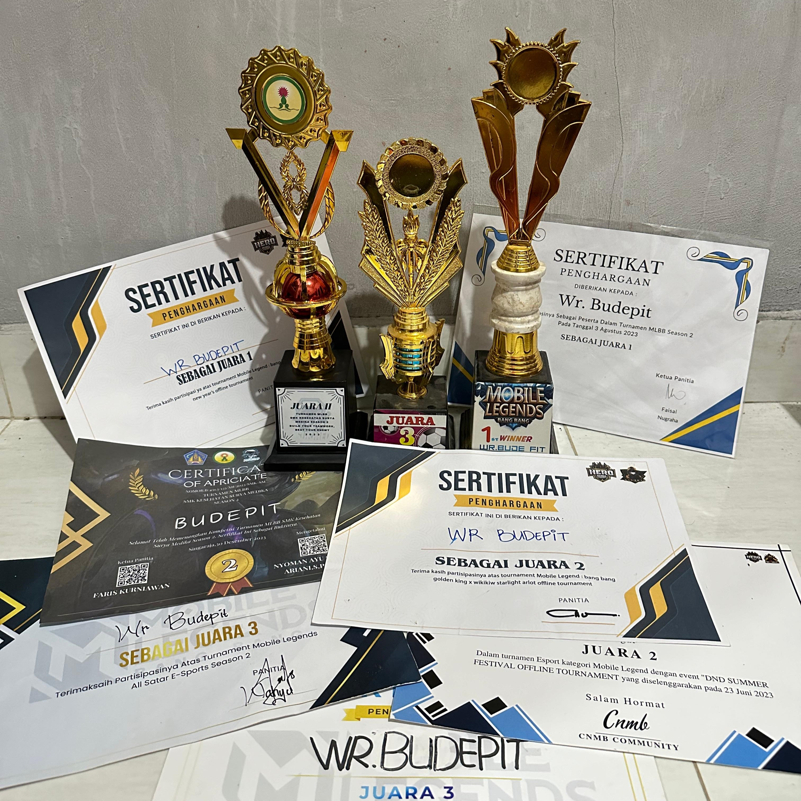
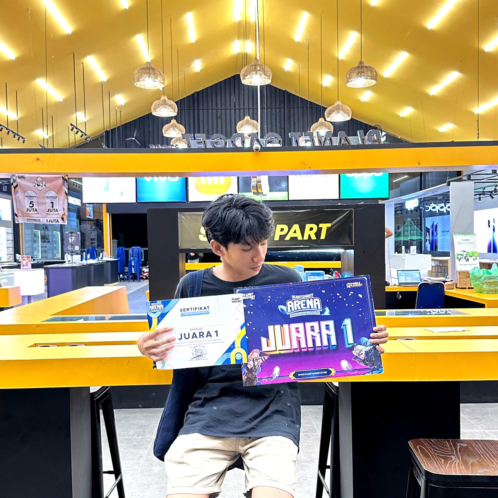

Profil Pribadi
Nama saya Didat Akmal Fatron. Saya adalah mahasiswa aktif semester 2 di Universitas Pendidikan Ganesha, tepatnya di jurusan Teknik Informatika, program studi Teknologi Rekayasa Perangkat Lunak D4.
Riwayat Pendidikan
| Tahun | Jenjang | Nama Sekolah |
|---|---|---|
| 2011 | Taman Kanak-kanak | TK Bakti 5 Dalung |
| 2013 | Sekolah Dasar | SDN 6 Dalung |
| 2015 | Sekolah Dasar | SDN 1,2,5 Banyuasri |
| 2019 | Sekolah Menengah Pertama | SMP Negeri 2 Singaraja |
| 2021 | Sekolah Menengah Atas | SMA Negeri 2 Singaraja |
| 2024 | Perguruan Tinggi | Universitas Pendidikan Ganesha |
Hobby
Saya memiliki dua hobi utama yaitu bermain gitar dan bermain Mobile Legends.
Pada saat luang saya sering bermain gitar untuk mengisi waktu.
Saya juga sering mengisi waktu saya untuk bermain game Mobile Legends karena pada game ini saya bisa mengasah kemampuan saya dalam mengatur strategi dan juga melatih pola fikir kritis saya.
Pengalaman
Dalam dunia musik, saya pernah mengikuti berbagai ajang pentas seni sewaktu di SMA. Salah satu pencapaian membanggakan saya adalah berhasil memenangkan lomba pentas seni sebagai pemain gitar.
Di dunia e-sport, khususnya Mobile Legends, saya telah mengikuti berbagai turnamen dari tingkat daerah, kabupaten, hingga tingkat umum. Puncak pencapaian saya adalah menjadi pemenang di penghargaan yang disponsori oleh Esport Indonesia (ESI) tingkat provinsi.

Ini adalah beberapa piala dan sertifikat yang saya dapatkan dari mengikuti lomba e-sport Mobile Legends.
Ini adalah beberapa ajang kompetisi e-sport yang paling berkesan menurut saya:
Ini adalah lomba e-sport Indonesia (ESI) x UNIPIN tingkat umum yang digelar di Denpasar pada tahun 2024.
Piala ini sangat berkesan bagi saya karena saya pergi keluar kabupaten diantar oleh orang tua dan berhasil memenangkan lomba tersebut.
Piala ini sangat berkesan bagi saya karena saya pergi keluar kabupaten diantar oleh orang tua dan berhasil memenangkan lomba tersebut.
Ini adalah lomba dengan sponsor E-sport Indonesia (ESI) x NEVER CUP vol 2 yang diadakan di Denpasar tahun 2024.
Pada kompetisi ini adalah pertama kalinya saya bersama rekan tim mengikuti kompetisi di luar kabupaten dan berhasil menjadi runner up.
Pada kompetisi ini adalah pertama kalinya saya bersama rekan tim mengikuti kompetisi di luar kabupaten dan berhasil menjadi runner up.

Piala ini saya raih pada saat lomba di Planet Gadget Singaraja, disponsori oleh E-Sport Indonesia (ESI) x Planet Gadget Singaraja pada tahun 2023.
Kompetisi ini berkesan karena hadiahnya lumayan besar dan saya bisa meraih juara 1 di antara tim-tim yang juga sedang perform.
Kompetisi ini berkesan karena hadiahnya lumayan besar dan saya bisa meraih juara 1 di antara tim-tim yang juga sedang perform.